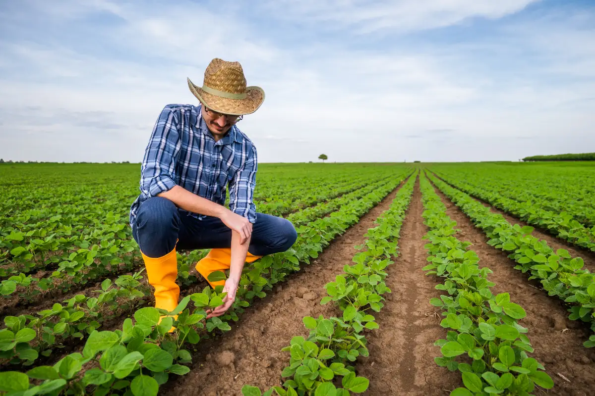

O QUE É AGRICULTURA INTENSIVA?
Em resumo, a agricultura intensiva é um sistema de produção agrícola que visa aumentar a produtividade por área, utilizando insumos, tecnologia e práticas de manejo de forma intensiva. Embora apresente benefícios como o aumento da produção e a melhoria da qualidade dos produtos, também pode ter impactos negativos no meio ambiente e na saúde humana, sendo importante a adoção de práticas sustentáveis para minimizar esses riscos.
